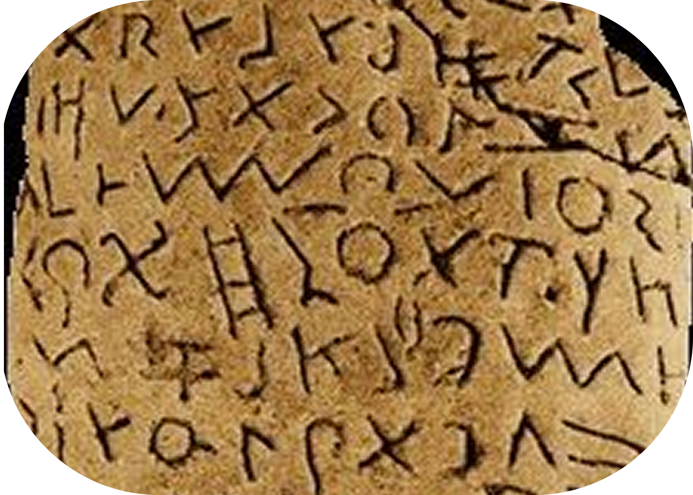
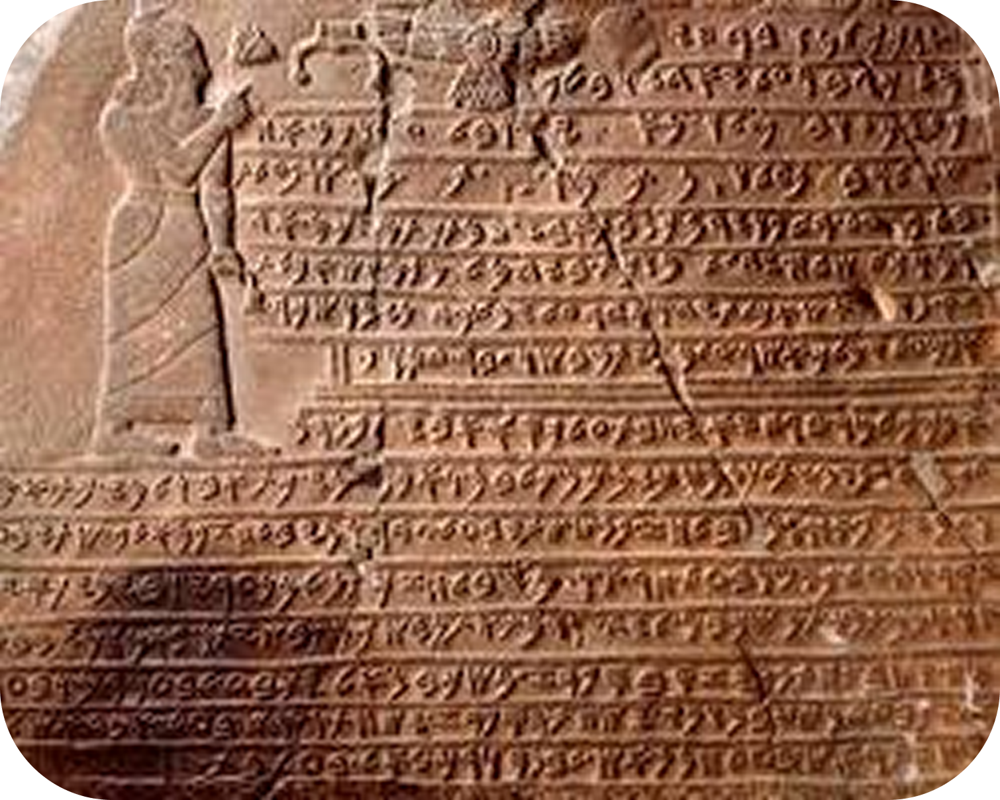
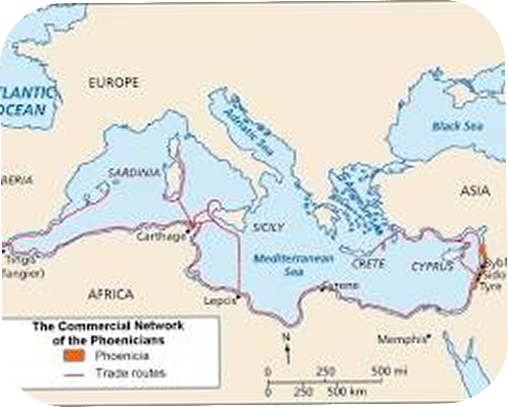

Descubra a Escrita:
Alfabeto fenício
- Líbano, 1050 a.C
Por volta de 1200 a.C., os fenícios habitavam a região costeira do mar Mediterrâneo, onde hoje se localizam o Líbano e a Síria. Como eram os maiores comerciantes e navegadores da Antiguidade, eles precisavam de uma forma rápida e eficiente de registar as suas transações comerciais, algo que os sistemas complexos da época, como os hieróglifos egípcios e a escrita cuneiforme mesopotâmica, não permitiam por exigirem anos de estudo para memorizar centenas de símbolos.

A Grande Inovação do Sistema Fonético

A grande genialidade dos fenícios foi abandonar os desenhos de ideias e focar-se puramente nos sons da fala, criando um sistema onde cada símbolo representava um único som consonantal. Ao reduzirem a escrita a apenas 22 letras, eles democratizaram o conhecimento para os comerciantes comuns, embora o sistema funcionasse como um abjad, o que significa que registava apenas as consoantes e as vogais tinham de ser deduzidas pelo leitor através do contexto.
O Processo Técnico
Ao contrário dos blocos de argila pesados da Mesopotâmia, os fenícios escreviam maioritariamente em materiais mais fáceis de transportar em navios, como rolos de papiro importados do Egito e pergaminhos de pele de animais. Toda essa escrita fenícia era tradicionalmente grafada da direita para a esquerda, uma característica técnica que acabou por influenciar diversos sistemas de escrita do Médio Oriente.

A Expansão Mundial e o Legado Moderno

Graças às suas colónias e colossais rotas comerciais, os fenícios espalharam o seu alfabeto por toda a bacia do Mediterrâneo, tornando-o a língua franca do comércio internacional. Por volta do século VIII a.C., os gregos adotaram esse sistema e adicionaram as vogais, criando a base para que os romanos, mais tarde, adaptassem o modelo e dessem origem ao alfabeto latino que usamos hoje.
Você Sabia? A nossa letra "A" atual veio diretamente da primeira letra fenícia, chamada Aleph, que significava "boi" e tinha o desenho estilizado de uma cabeça de boi com cornos. Quando os gregos a adotaram, viraram o símbolo de pernas para o ar, criando o formato do "A" que usamos hoje!